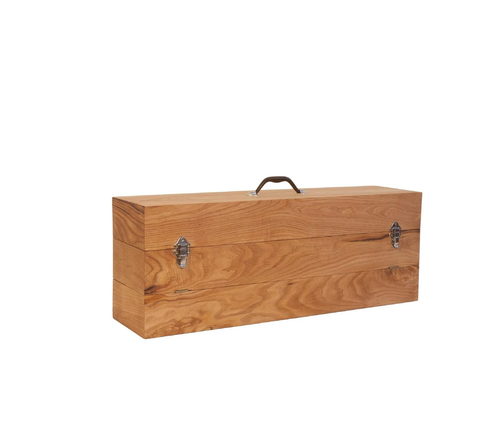
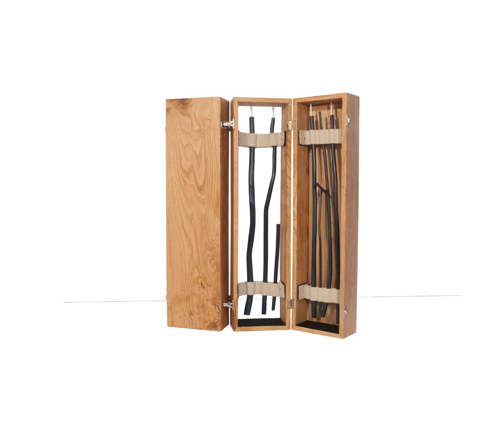
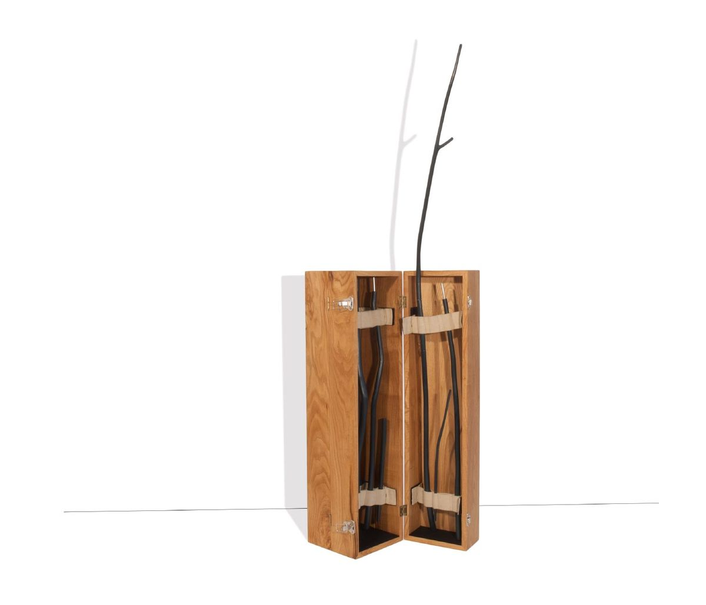
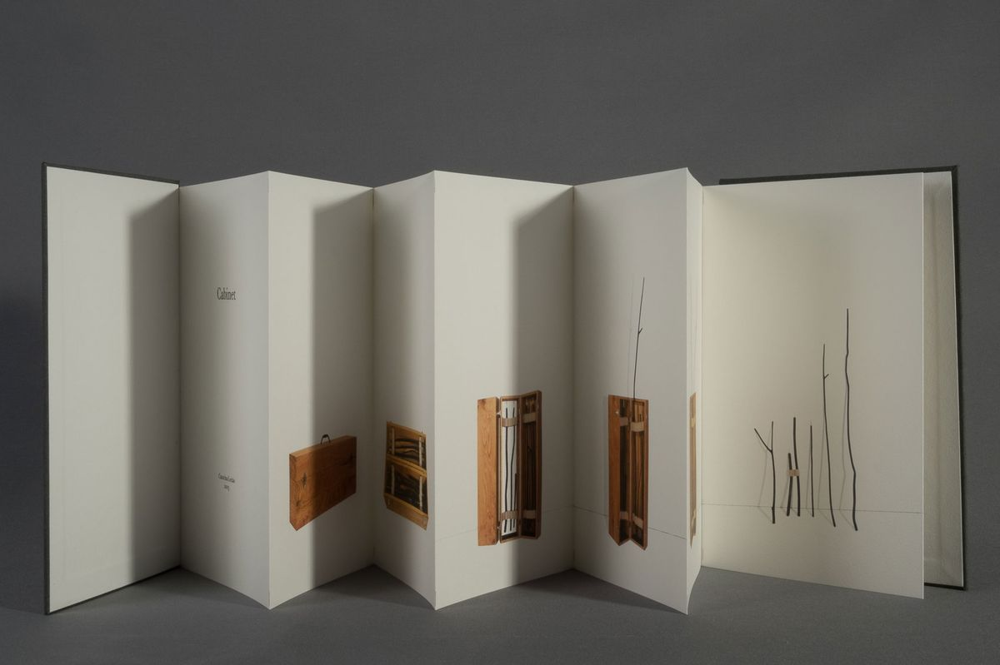
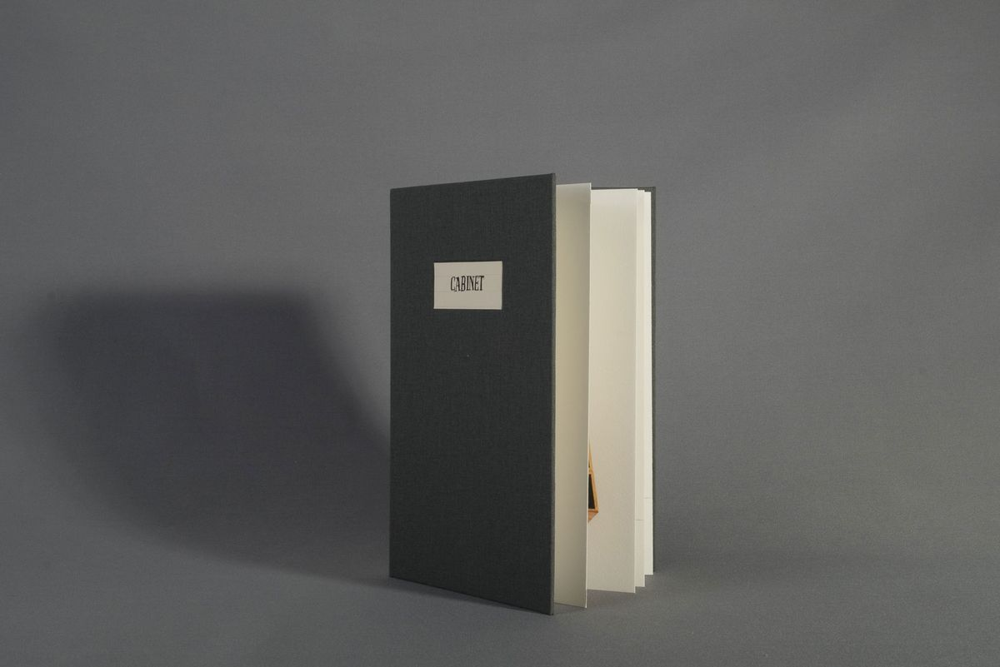
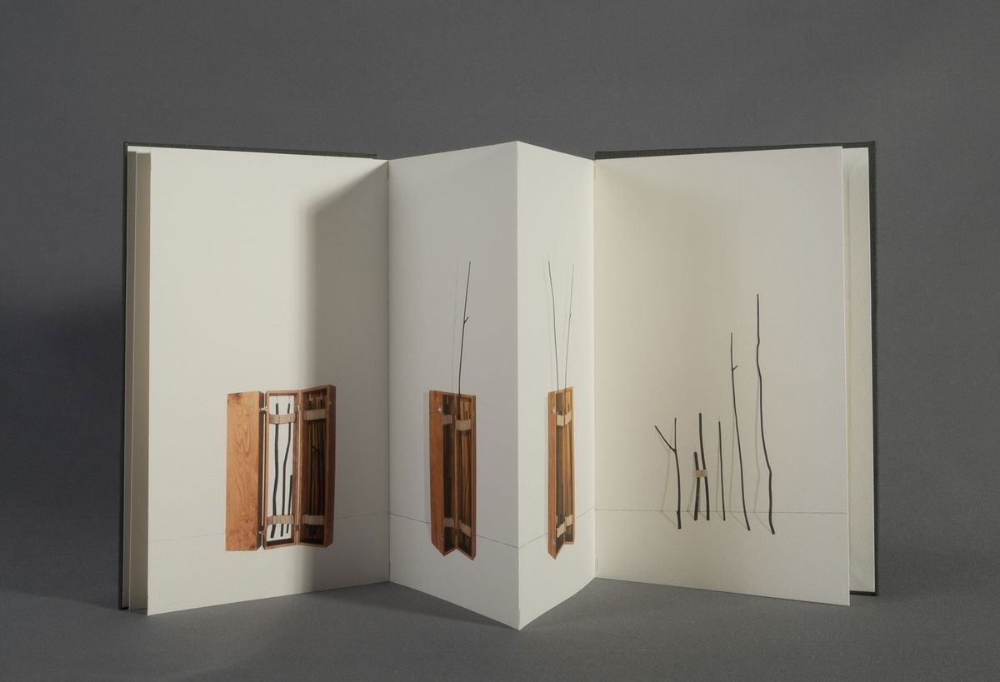
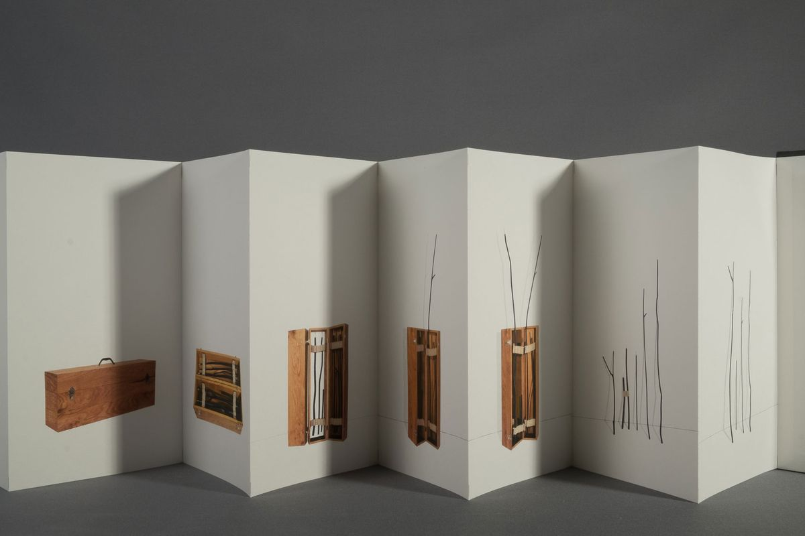

Cabinet
2013–15
Cabinet, 2013. Mixed media, wood, aluminum, velcro, fabric and paper, 80x30x20 cm (closed).
Cabinet is a hybrid body that reveals itself in space as an independent organism: adaptable and dynamic. — José Roseira, 2013







Texts
- CabinetJosé Roseira